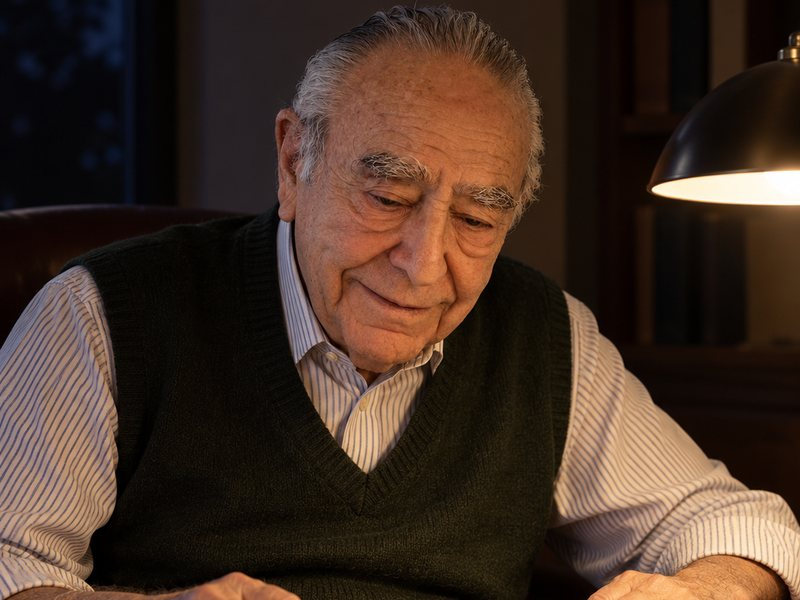

The practice
Dr. Schwarz is the president of the practice he started more than sixty years ago. His clinical work has always been with children and teenagers.
His legal work followed the same instinct. He advises government agencies and health care providers on how federal rules, state rules and day to day operations fit together when care is delivered and when it is paid for.
One subject he returns to is the Individuals with Disabilities Education Act. In his reading, the law has quietly made local school districts the largest provider of mental health services to young people in the country, and has handed them statutory duties that most districts are not equipped to carry out. He works on how that law is read and how it is applied.
Medicine and law
He took his medical degree at Wayne State University in 1950, trained in internal medicine and psychiatry in Detroit, and has spent the decades since in child and adolescent psychiatry. He is certified in psychiatry by the American Board of Psychiatry and Neurology and holds a medical licence in Illinois.
He finished a law degree at Loyola University School of Law in 1983. Drawing on both professions he has taken part in civil rights cases and class actions for people with mental illness in several states, including work that enforced their liberty rights under the Fourteenth Amendment, and he has given his time to drafting state mental health statutes.
The record
Credentials
A working life

The year he founded Associates in Adolescent Psychiatry
Doctorates, one in medicine and one in law
Faculties he has taught on
Contact
For professional enquiries, consulting work on health care law, teaching and speaking. Patients and families seeking an appointment should contact the practice directly.
Associates in Adolescent Psychiatry
Skokie, Illinois
Every picture of Dr. Schwarz on this page is an AI generated illustration, produced with his approval from a reference photograph. They are not photographs of real events.